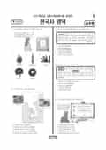

문제지

시험지 만들기준비하고 있어요. 열리면 아래 탭에서 바로 쓸 수 있어요.
2021학년도 대학수학능력시험 · 2020년 11월 시행
2021학년도 수능 한국사 1등급 기준은 원점수 40점 이상(절대평가)입니다.

발행 기관: 한국교육과정평가원(KICE). 파일 위치: 이 사이트가 보관한 사본. 저작권은 발행 기관에 있습니다. 원본과 다르거나 게시 중단이 필요하면 연락처로 알려 주세요. 등급컷 출처 구분은 데이터 원칙에서 설명합니다.
2021학년도 수능 한국사는 1등급(40점 이상) 비율이 34.32%인 쉬운 시험이었고, EBSi 가채점 응답자 기준 오답률 50%를 넘은 문항은 5번(2점, 57.2%) 하나였습니다. 그다음은 4번(48.4%), 13번(45.6%), 8번(44.4%)으로 40%대였습니다.
화면 속 교사는 고려 시대에 나온 저술 가운데 민족의 자주 의식이 반영된 것을 묻습니다. 학생들은 일연의 『삼국유사』와 이규보의 「동명왕편」을 이미 답했습니다. (가)에는 단군 이야기를 싣고 우리 역사를 중국사와 대등하게 서술한 이승휴의 『제왕운기』(③)가 들어갑니다. 응답의 40.8%가 고른 유득공의 『발해고』도 발해를 우리 역사로 끌어들여 자주 의식을 보여 주는 책이지만, 조선 후기의 저술이라 질문의 조건에 맞지 않습니다. 안정복의 『동사강목』 역시 조선 후기, 박은식의 『한국통사』와 백남운의 『조선사회경제사』는 일제 강점기의 저술입니다.
일본 전권 대사가 궁궐에 들어와 서명을 강요하고, 통감을 두고 외교권을 박탈한다는 내용, 외부(外部) 도장을 강제로 찍었다는 서술로 1905년 을사늑약을 특정합니다. 연표에서 대한 제국 수립(1897)과 고종 강제 퇴위(1907) 사이인 (라), 정답 ④입니다.
4번은 박수경 등과 함께 신검의 군대를 격파해 후삼국을 통일하고, 통일 과정의 공로를 기준으로 역분전을 지급한 태조 왕건에 대한 문항입니다. 태조가 운영한 사심관 제도(②)가 정답입니다. 8번은 광해군 때 이원익의 건의로 경기도에서 먼저 시행된 대동법을 다루며, 방납의 폐단을 없애려 한 이 법으로 관청에 물품을 조달하는 공인이 성장했다는 ①이 정답입니다.